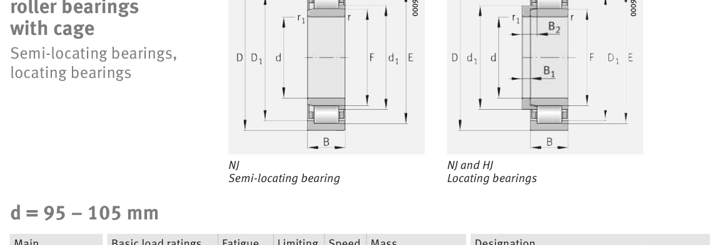

Original catalogue drawing - FAG Schaeffler HR 1, page 466

Scanned from the manufacturer catalogue page listing this part number. All part numbers printed on that table share the same drawing.
Scale cross-section
Blue = inner / outer ring, yellow = rolling element. Drawn to scale from this part's own
dimensions for selection reference only - not a manufacturing or assembly drawing.
Dimension table (mm / inch)
Symbol
Dimension
mm
inch
d
Bore diameter
100
3.937
D
Outside diameter
180
7.0866
B
Inner-ring / bearing width
46
1.811
r
Chamfer (min)
2.1
0.0827
E
Roller-set outside dia.
163
6.4173
F
Roller-set bore dia.
119
4.685
Notes
Weights are given in kg. Load ratings are shown in both the original catalogue units and the converted value (1 N = 0.2248 lbf). Data is provided for selection reference only - confirm against the latest official catalogue before ordering.
Main dimensions
Bore d (mm)
100
Outside dia. D (mm)
180
Width B (mm)
46
Inner-ring OD d1 (mm)
127.3
Inner-ring shoulder dia. D1 (mm)
156.9
Dimension E (mm)
163
Dimension F (mm)
119
Load ratings & speeds
Basic dynamic load rating Cr (lbs)
88800
Basic static load rating Cor (lbs)
100040
Basic dynamic load rating Cr (N)
395000
Basic static load rating C0r (N)
445000
Fatigue limit load Cur (N)
76000
Limiting speed nG (rpm)
4,550
Reference speed nB (rpm)
2,900
Weight
Weight (kg)
4.92
Mounting dimensions (fillets / shoulders)
Housing fillet r max (mm)
2.1
Chamfer r1 min (mm)
2.1
Shaft shoulder da (mm)
112
Shaft shoulder dc (mm)
130
Housing shoulder Da (mm)
168
Housing fillet ra max (mm)
2.1
Bearing life (ISO 281 basic rating life)
C / P
Equivalent load P (N)
L10 (106 rev)
L10h at 1,500 rpm
4
98,750
102
1,129
6
65,833
392
4,361
8
49,375
1,024
11,378
10
39,500
2,154
23,938
15
26,333
8,323
92,483
Basic rating life per ISO 281: L10 = (C/P)10/3 with C = 395,000 N. Hours = L10 x 106 / (60n). Life-modification factors for lubrication, contamination and temperature (aISO) are not included.
Source & traceability
Brand
FAG
Source catalogue
FAG / Schaeffler Rolling Bearings HR 1
Catalogue page
p.466 (dimensions)
Load ratings in newtons, fatigue limit load Cur, limiting speed nG and reference speed nB.
Send us the quantity you need and we will come back with price and
lead time, normally within 24 hours. Equivalent parts from other brands can be quoted at the same time.